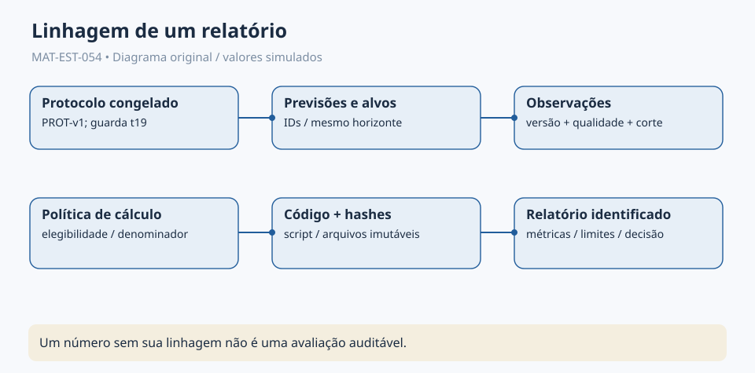
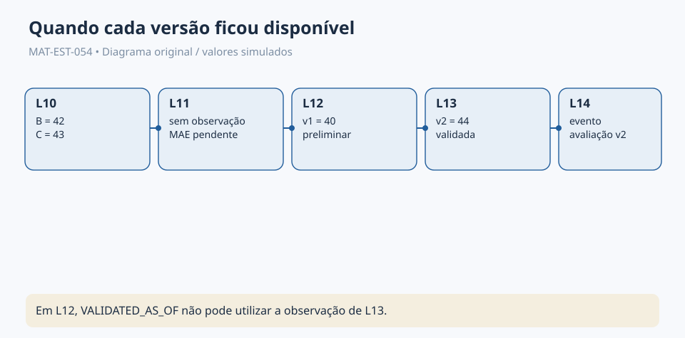
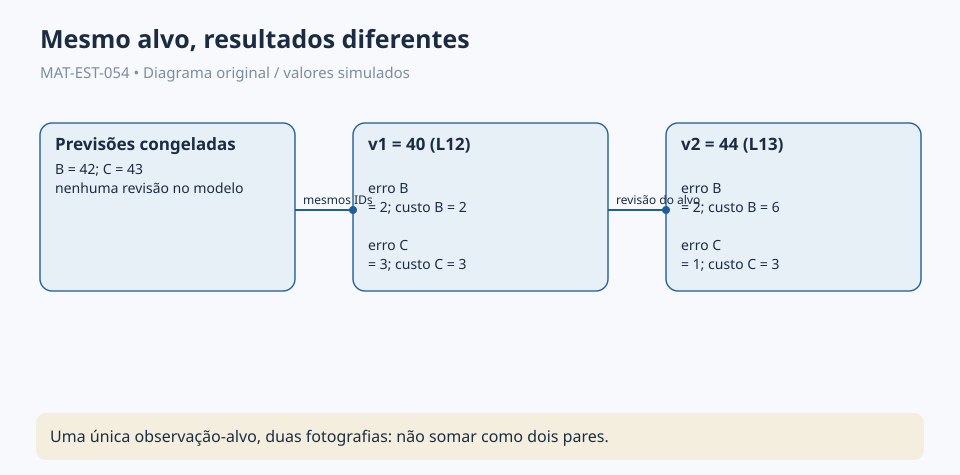
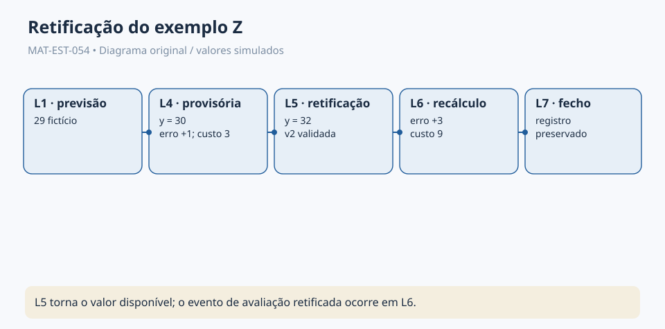
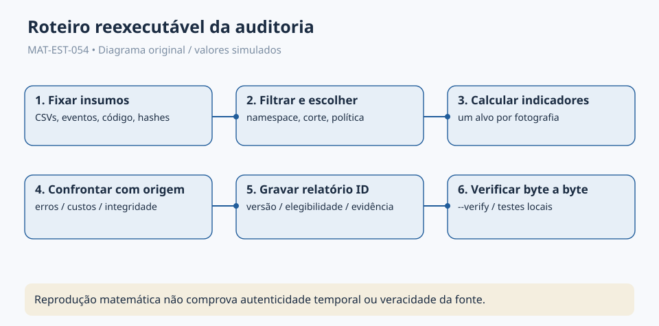
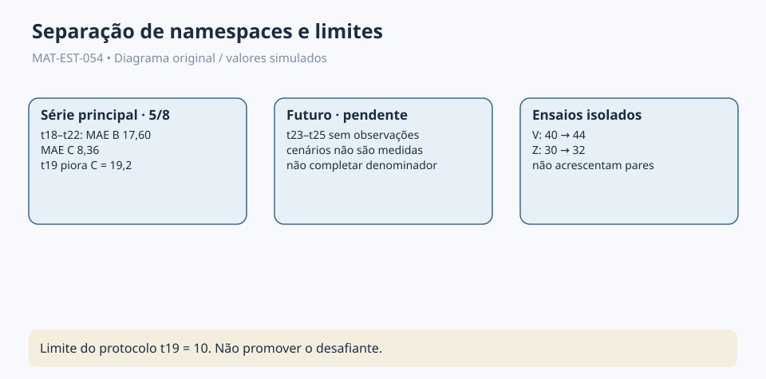

Prévia editorial local · não publicada
MAT-EST-054 — Auditoria de avaliações temporais: reconciliação de versões, rastreamento de métricas e relatórios reproduzíveis
Área: Matemática. Unidade: Estatística, séries temporais e ponte universitária. Nível: 6. Anterior: MAT-EST-053. Próximo (proposto): MAT-EST-055. Origem: aula, números e exercícios autorais. Questões oficiais: zero. Progresso individual: não iniciado, sem evidência de estudo. Estado editorial: pacote local, não publicado nem sincronizado.
Roteiro flexível: bloco A, entender o objeto da auditoria e o corte informacional (25 a 50 minutos); bloco B, reproduzir a reconciliação de versões e os cálculos (25 a 50 minutos); bloco C, interpretar relatórios, resolver atividades e revisar (25 a 50 minutos). Caso algum pré-requisito falhe, retorne a ele antes de prosseguir. A geração do material não é conclusão de aprendizagem.
1. Objetivo, perguntas e pré-requisitos
Ao estudar e realizar as atividades, você deverá conseguir: explicar por que dois relatórios sobre um mesmo alvo podem discordar sem que a previsão tenha mudado; registrar qual versão e qual corte informacional uma métrica utiliza; reconstruir erros, módulos, custos, médias e denominadores; verificar se dois relatórios são comparáveis; classificar divergências como esperadas ou problemáticas; organizar a linhagem de um relatório reexecutável; reconhecer limites do SHA-256; redigir uma conclusão técnica que preserve as guardas do protocolo.
Pré-requisitos: subtração com números negativos, módulo, média e porcentagem; MAT-EST-047 para erros; MAT-EST-049 e 050 para comparação emparelhada e guardas; MAT-EST-051 para plano prospectivo; MAT-EST-052 para eventos e atraso; MAT-EST-053 para versões da observação, proveniência e corte. Um erro no sinal deve ser corrigido primeiro numa conta curta, não encoberto com automatização.
Relevância para exames: ENEM e vestibulares podem demandar interpretação de gráficos, porcentagens, critérios, fontes e inferências; este aprofundamento em auditoria de modelos é uma ponte universitária, não uma afirmação de que determinada banca exige o script desta aula.
2. A pergunta central: por que um relatório não é só um número?
Imagine encontrar dois relatórios: um diz que o modelo B teve erro de duas unidades e o modelo C, de três; outro diz que B teve erro de duas e C, de uma. Um leitor pode concluir que alguém mudou a previsão. Porém uma informação foi revista: a previsão original continuou B igual a 42 e C igual a 43, enquanto a observação passou de 40 preliminar para 44 validada. Cada relatório só é inteligível quando contém os identificadores das observações usadas e a política de qualidade.
Um relatório reproduzível precisa permitir que uma segunda pessoa siga os mesmos passos, com os mesmos arquivos, regras, versões e cortes e obtenha a mesma saída. Um relatório auditável também mostra por que cada entrada foi admitida, quando ficou disponível no exemplo e qual regra autorizou o cálculo. Reproduzir um número não valida automaticamente a fonte nem certifica que uma previsão foi realmente emitida antes de observar o alvo.
Os casos V e Z abaixo são ensaios isolados e totalmente fictícios. Não se acrescentam à série principal t01 a t22. Para t23 a t25, não há observações ou emissões autenticadas; B23 igual a 183 e C23 igual a 199 são apenas recálculos ilustrativos já documentados.

Figura 1 — Rastreabilidade do relatório. Texto alternativo: um relatório aponta para o protocolo congelado, previsão por ID, observação por ID e versão, política de elegibilidade, corte, código e arquivos de entrada, cada um identificado. Observe: a métrica é o último elo, não o começo. Conclusão pronunciável: sem declarar suas entradas e suas regras, o mesmo número não tem significado auditável. Autoria: original do projeto.
3. Quatro fotografias de dados que não podem ser confundidas
Na MAT-EST-053, o EXEMPLO-V guardou duas previsões fictícias em L10: B igual a 42 e C igual a 43, ambas para o mesmo alvo V. A primeira observação, de 40, aparece em L12 com qualidade preliminar. Em L13, uma retificação validada a substitui para uso analítico, sem apagar o registro histórico: valor 44, MAT-EST-053-V-OBS-v2, que referencia MAT-EST-053-V-OBS-v1. Em L14 há um evento didático de avaliação validada. A presente aula produz recálculos locais, não reivindica ter emitido relatórios nos momentos L12 ou L13.
A política AS_KNOWN pergunta o que estava disponível até o corte, sinalizando se a versão era preliminar. VALIDATED_AS_OF permite apenas a versão validada que já existia até o mesmo corte. Portanto:
| Corte do exemplo | AS_KNOWN | VALIDATED_AS_OF | Interpretação |
|---|---|---|---|
| L11 | sem observação | sem observação | nenhuma métrica avaliável |
| L12 | v1 = 40, preliminar | sem observação validada | relatório preliminar, não final |
| L13 | v2 = 44, validada | v2 = 44, validada | recálculo com revisão disponível |
Síntese para ouvir: antes de L12 não temos observação. Em L12, só existe o valor preliminar quarenta. Em L13, a versão validada quarenta e quatro se torna conhecida. Exigir uma versão validada em L12 leva a uma pendência, não a um erro de zero, nem permite buscar retroativamente o valor de L13.

Figura 2 — Cortes informacionais. Texto alternativo: L10 traz previsões, L11 não tem observação, L12 traz 40 preliminar, L13 traz 44 validado e L14 é o evento de avaliação validada já previsto no log didático. Observe: o mesmo alvo apresenta versões distintas, mas não dois alvos. Conclusão pronunciável: o instante do corte determina que versão existe para o avaliador. Autoria: original do projeto.
4. Formalização: identidade de uma avaliação
Uma avaliação precisa de mais que o nome do modelo. Registre o par run_id e evaluation_id, a lista de previsões e seus IDs, os alvos e o horizonte, o corte de disponibilidade, a política de qualidade, os IDs das versões observadas, o código utilizado, os digests de entrada, a unidade e o indicador calculado. Identificadores estáveis são mais seguros que nomes informais como “relatório atualizado”.
Para um alvo i, uma observação em versão v e uma previsão congelada, o erro é:
[e_i^{(v)}=y_i^{(v)}-\widehat y_i.]
Leitura por extenso: erro do alvo i na versão vê é a observação correspondente nessa versão menos a previsão que já estava congelada. O sinal positivo indica subprevisão, e o sinal negativo indica superprevisão. A previsão não é reajustada ao rever o alvo.
Para o conjunto de alvos elegíveis E em um corte e uma política declarados:
[MAE=\frac{\sum_{i\in E}|e_i|}{|E|}.]
Leitura: erro absoluto médio é a soma dos módulos dos erros dos alvos elegíveis dividida pela quantidade desses alvos. Aqui |E| é a quantidade de alvos distintos, não a quantidade de arquivos ou de versões. Se esse conjunto estiver vazio, o MAE é indefinido ou pendente, não zero.
A regra de custo fictício herdada é:
[C(e)=3\max(e,0)+\max(-e,0).]
Leitura: custo de e é três vezes a parte positiva do erro, mais a parte positiva do oposto do erro. Um erro de mais dois custa seis pontos; um erro de menos dois custa dois. São pontos convencionais de um exercício autoral, não preços, políticas públicas ou valores monetários.
Se dois relatórios adotarem conjuntos elegíveis distintos, não se pode atribuir toda a diferença de MAE à revisão de um valor: também mudou o denominador ou a composição. Compare, quando possível, o conjunto comum e registre separadamente entradas e saídas. No EXEMPLO-V, o alvo é o mesmo, as previsões são idênticas e apenas a versão da observação muda, tornando mais clara a causa da divergência.
5. Exemplo resolvido: auditoria de V, conta por conta
Primeira fotografia, v1 preliminar de 40. Para B, o erro é quarenta menos quarenta e dois, igual a menos dois. Para C, quarenta menos quarenta e três, igual a menos três. Os módulos são dois e três; os custos são dois e três pontos, porque ambos superpreviram. Na única observação elegível para AS_KNOWN em L12, os MAEs individuais são respectivamente dois e três. Trata-se de avaliação preliminar, não de escore final validado.
Segunda fotografia, v2 validada de 44. Para B, o erro é quarenta e quatro menos quarenta e dois, igual a mais dois. Para C, quarenta e quatro menos quarenta e três, igual a mais um. Os módulos passam a dois e um; o custo de B passa a seis pontos e o de C a três. Em L13, a política validada admite um alvo. Em L12, a mesma política admitiria zero.
| Indicador em V | L12: 40 preliminar | L13: 44 validado |
|---|---|---|
| erro assinado B | −2 | +2 |
| erro assinado C | −3 | +1 |
| MAE de B sobre um alvo | 2 | 2 |
| MAE de C sobre um alvo | 3 | 1 |
| custo B | 2 | 6 |
| custo C | 3 | 3 |
| diferença MAE C menos B | +1 | −1 |
| diferença de custo C menos B | +1 | −3 |
Síntese pronunciável: na versão preliminar, o módulo de B é menor. Na versão validada, o módulo de C é menor. A diferença relativa do módulo muda de mais uma unidade para menos uma, variação de menos duas unidades. Isso decorre da revisão de 40 para 44, não de um treino novo. Os dois relatórios não devem ser agregados como duas observações independentes. A escolha de qual relatório utilizar deve ser determinada por uma política documentada, não pela aparência do resultado.

Figura 3 — O que a revisão muda e o que preserva. Texto alternativo: previsões B42 e C43 mantidas; preliminar 40 produz módulos B2/C3; validada 44 produz módulos B2/C1. Observe: a ordenação local inverte quando a referência observacional muda. Conclusão pronunciável: resultados só são comparáveis após identificar a versão avaliada. Autoria: original do projeto.
6. Segundo caso: conciliação do histórico EXEMPLO-Z
A MAT-EST-052 criou um ensaio separado com sete eventos lógicos e previsão fictícia de 29. O recebimento de 30 em L4 gerou erro de mais um e custo de três pontos, explicitamente provisórios. Em L5, a observação foi corrigida para 32 e validada. Em L6, o evento de recálculo registrou erro de mais três e custo de nove pontos. O encerramento aparece em L7.
Há uma diferença importante entre a disponibilidade do valor corrigido em L5 e a existência do evento de recálculo em L6: não se deve atribuir um relatório histórico a L5 apenas porque seria possível fazer a conta naquele corte. A presente automação reproduz numericamente as duas avaliações didáticas, mas não cria carimbo temporal externo.
O código verifica que a sequência de sete eventos mantém o identificador anterior e que o SHA-256 de cada registro, conforme a serialização definida no ensaio, corresponde ao digest gravado. Isso detecta alterações em comparação com o arquivo de referência disponível; não prova que a fonte é verdadeira, que alguém específico o emitiu, ou que os rótulos L1 a L7 são horários certificados.

Figura 4 — Uma previsão, duas versões observacionais. Texto alternativo: previsão 29 em L1, recebido 30 em L4, corrigido para 32 em L5, reavaliado em L6 e encerrado em L7. Observe: a avaliação antiga continua rastreável. Conclusão pronunciável: retificar um relatório é acrescentar uma avaliação identificada e preservar a precedente. Autoria: original do projeto.
7. O que foi produzido pelo verificador reproduzível
O arquivo auditoria/recalcular_relatorios.py usa apenas recursos da biblioteca padrão de Python. Ele lê cópias byte a byte dos registros herdados, recalcula os cinco pares da série principal e confronta os valores presentes no CSV com os novos cálculos. Depois, constrói seis fotografias de V: três cortes, L11, L12 e L13, cruzados com duas políticas. Por fim, inspeciona os sete eventos de Z e calcula as duas avaliações documentadas, sem misturar os namespaces.
O programa grava relatorios/relatorio-auditoria.json e relatorios/conciliacao-de-versoes.csv. Cada relatório JSON inclui resumos SHA-256 dos arquivos necessários e do próprio script. O modo --verify reconstrói a saída em memória e compara os bytes com os relatórios locais, sem reescrevê-los. As condições relevantes são testadas em auditoria/testar_auditoria.py. Há também um manifesto SHA-256 de entrega.
Comandos locais, apenas para quem quiser praticar no computador:
cd MAT-EST-054
python auditoria/recalcular_relatorios.py --verify
python auditoria/testar_auditoria.py
O comando sem --verify regenera o relatório a partir dos arquivos copiados. O relatório somente pode receber o rótulo reproduzido localmente a partir desses bytes e desta versão de script. Isso não equivale a teste de campo, autenticação de emissões ou avaliação futura de t23 a t25.

Figura 5 — Recalcular e reconciliar. Texto alternativo: arquivos e digests são fixados, o programa filtra por namespace e corte, escolhe uma versão por alvo, calcula indicadores, compara resultados e mantém a divergência explicada. Observe: nenhum passo seleciona o resultado desejado depois de vê-lo. Conclusão pronunciável: a reprodução depende de dados, regras e código identificáveis. Autoria: original do projeto.
8. Como classificar divergências e responder a elas
Nem toda diferença entre dois relatórios significa erro. Proponha um fluxo simples de triagem:
- Diferença esperada de versão: mesmo alvo e previsões, mas observação validada diferente da preliminar. Preservar ambos os IDs; escolher política e explicar diferença.
- Diferença de corte: relatório antigo usa informação posterior ao corte alegado. Classificar como violação informacional; reconstruir com somente o que estava disponível.
- Diferença de conjunto ou denominador: um relatório possui cinco alvos e o outro quatro. Informar exclusões antes de comparar médias; ausente não vale zero.
- Divergência de cálculo ou código: entradas e política coincidem, mas o valor é diferente. Conferir fórmula, versão do código, unidade, arredondamento e implementação.
- Divergência de integridade ou proveniência: hash de arquivo de referência não corresponde ao arquivo recebido. Suspender a afirmação de reprodução até reconciliar; hash sozinho não identifica a pessoa responsável.
- Contaminação entre estudos: caso isolado V ou Z incluído na série principal. Remover da agregação, explicar erro e preservar a ocorrência para auditoria.
Uma conciliação pode resultar em igual, mudança_esperada_com_nova_versão, pendente, incompatível, ou incidente_de_integridade. O critério e a evidência de cada rótulo devem aparecer por escrito; não o atribua somente porque a planilha ficou visualmente diferente.
9. A série principal permanece sob o protocolo congelado
Os cinco pares fictícios t18 a t22 têm somas dos erros absolutos B igual a 88 e C igual a 41,8 unidades. Dividindo cada soma por cinco, obtemos MAE de 17,60 e 8,36. A redução relativa observada do MAE é (17,60 − 8,36)/17,60, isto é, 52,5 por cento. Os custos totais são B igual a 256 e C igual a 74,6 pontos; as médias são 51,20 e 14,92 pontos. A redução média relativa do custo é aproximadamente 70,86 por cento. Os números dizem respeito exclusivamente à simulação editorial de cinco pares.
A condição de segurança do protocolo MAT-EST-049-PROT-v1 não foi satisfeita: em t19, B teve erro absoluto quatro, C teve 23,2, e a piora local do desafiante foi 19,2 unidades, acima da guarda de dez. Além disso, há somente cinco dos oito pares planejados. A versão posterior de um exemplo isolado não repara essa falha. Decisão preservada: não promover C sob o protocolo original.
No caso principal, as novas rotinas de auditoria não recebem t23, t24 ou t25 como observação; nem convertem os cenários 178, 191 e 209 em dados. A série observada editorialmente termina em t22. A comparação B/C é didática e não constitui evidência de implantação real.

Figura 6 — Três espaços de dados separados. Texto alternativo: t18 a t22 da série principal possuem cinco pares; t23 a t25 estão pendentes; V e Z são exercícios isolados; t19 possui piora local 19,2 acima do limite dez. Observe: somar registros independentes não cria três pares que faltam. Conclusão pronunciável: a melhor média parcial não dispensa os demais critérios congelados. Autoria: original do projeto.
10. Modelo de relatório auditável para ler em voz alta
Objeto e corte. “Esta auditoria didática comparou dois modelos congelados, B e C, em cinco alvos fictícios de horizonte um, de t18 a t22. O protocolo utilizado é a versão MAT-EST-049-PROT-v1. Não houve ingestão de observações dos alvos t23 a t25.”
Fontes e reprodução. “Os cálculos foram reconstruídos a partir dos arquivos herdados, com hashes registrados e versão identificada do script. Os exercícios V e Z foram processados em namespaces distintos, sem alterar os cinco pares principais.”
Resultados e ressalvas. “O MAE parcial de B é 17,60 e o de C é 8,36 unidades. A observação do exemplo V foi corrigida, mudando o módulo de C de três para um, sem mudar suas previsões. Essas duas versões não são novos alvos.”
Decisão e limites. “A guarda do protocolo foi violada em t19, pois o desafiante deteriorou 19,2 unidades em relação à referência, além de faltarem três pares. Não existe autorização de promoção. A reprodução numérica não atesta operação real, autenticidade temporal, generalização estatística ou qualidade das fontes.”
11. Erros frequentes e aplicações interdisciplinares
Erros a evitar: chamar o cálculo preliminar de final; usar a versão de L13 num relatório declarado como L12; contar duas versões de V como dois alvos; dividir por oito quando somente cinco são elegíveis; misturar unidades com pontos de custo; modificar uma previsão após olhar a observação; tomar um hash como assinatura ou registro de horário certificado; dizer que uma auditoria de planilha prova qualidade de previsão no mundo real; aceitar a melhora média sem verificar a guarda de t19; omitir o código e a versão das entradas.
Conexões: Matemática explica sinais, módulos, médias e diferenças; língua portuguesa exige a redação precisa de ressalvas; história e metodologia científica discutem revisão de fontes e reconstrução de evidência; computação estuda versionamento, testes determinísticos e trilhas de auditoria; administração exige distinguir indicador, risco e decisão normativa. Nenhum dos casos fictícios representa dados institucionais ou pessoais reais.
12. Vídeo complementar e fontes
Vídeo candidato preservado: Time series cross-validation — OTexts, YouTube. Idioma: inglês; duração aproximada informada na ficha anterior: 16 minutos e 35 segundos, não cronometrada nesta geração. Assista depois da seção 4 para reforçar a separação temporal entre treino e alvo, que fundamenta a auditoria de cortes. O link do YouTube não pôde ser aberto pela ferramenta de consulta nesta execução; a acessibilidade atual, legendas e reprodução integral permanecem pendentes de validação pré-publicação. O vídeo não substitui esta aula.
Fonte didática externa consultada: Hyndman e Athanasopoulos, Forecasting: Principles and Practice, 3ª edição, seção 5.10, validação cruzada de séries temporais, sobre avaliação por origens temporais; seção 5.8, avaliação de previsões pontuais, sobre erros fora do ajuste e métricas. A metodologia específica de conciliação, os cenários, critérios didáticos e os relatórios são produções do projeto, não transcrições dessas fontes. Fontes internas: arquivos dos pacotes MAT-EST-049 a MAT-EST-053 preservados neste ZIP.
13. Atividades, correção e revisão
Resolva exercicios.md antes de abrir gabarito-comentado.md: dez questões básicas, dez de consolidação, dez autorais contextualizadas no estilo vestibular e seis de reteste. São 36 atividades autorais, nenhuma questão oficial. Cada correção explica o raciocínio e sugere provável categoria de erro: conteúdo, interpretação, cálculo, distração, memória, estratégia ou tempo. Um erro na convenção do sinal pede uma conta menor; um erro no corte pede retornar à linha temporal.
Resumo para ouvir: uma avaliação auditável identifica previsões, versões observadas, cortes, regras, código e arquivos de entrada. A retificação pode mudar uma métrica sem alterar o modelo. No caso V, a revisão de quarenta para quarenta e quatro mudou a comparação local; no caso Z, a revisão de trinta para trinta e dois mudou o custo de três para nove. Ambos são ensaios apartados. Na série principal permanecem cinco pares, com falha da guarda em t19, e os alvos t23 a t25 seguem sem observações. O script permite repetir as contas com os mesmos bytes; não autentica execução em campo nem autoriza promoção do modelo.
Revisão espaçada: contar um, sete e trinta dias a partir de estudo e tentativa efetivos, não da geração da aula. No primeiro retorno, reconstruir a tabela de V sem consulta; no sétimo dia, explicar estados pendentes e reproduzir as médias do conjunto principal; no trigésimo, realizar os seis itens de reteste e escrever o relatório de quatro parágrafos. Consolidar somente após compreensão demonstrada, correção e recuperação posterior.
Próximo tópico editorial proposto, não iniciado: MAT-EST-055 — Governança de modelos temporais: documentação de decisões, responsáveis, revisões e critérios de encerramento.
Limites desta entrega: nenhum dado externo da série foi coletado; nenhuma observação para t23–t25 foi acrescentada; nenhuma previsão foi autenticada em campo; nenhum protocolo foi alterado; não houve sincronização com Drive/GitHub, publicação no site nem teste manual da leitura em voz alta do Microsoft Edge. O progresso individual permanece não iniciado.